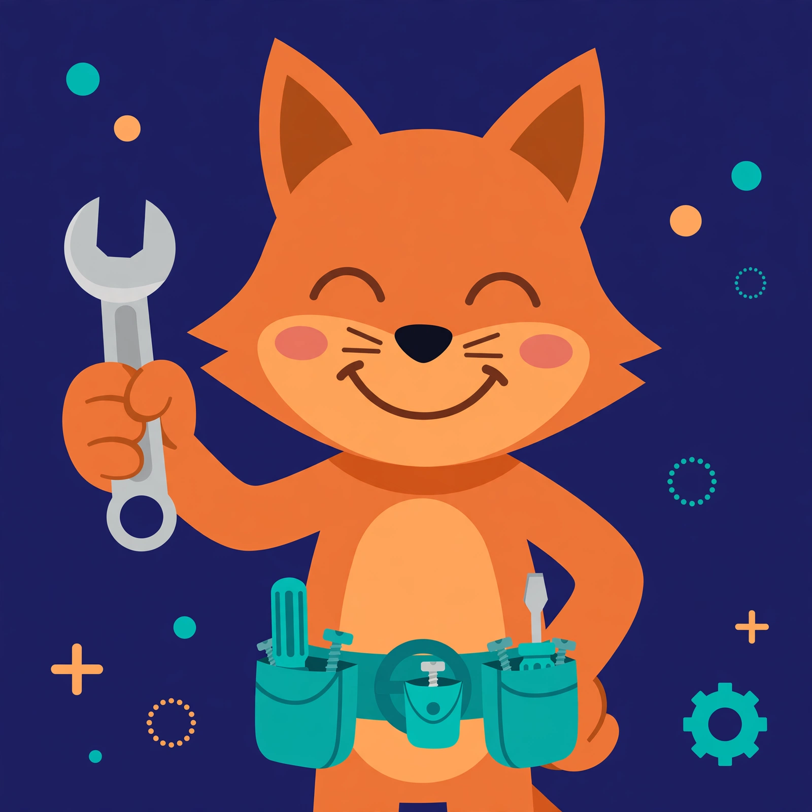

The Signature Mr Fix-It — question-and-answer website

Mascot: Felix the Fix-It Fox. This is the question-and-answer website for The Signature Mr Fix-It. Its keeper is JAH Fix-It Librarian.
Demo — answers from this subject's own records
Demo: answers come from this subject's own records on this page (keyword answers from the archive sample of 20 records). It is not the full hosted engine and it does not check the live web.
Online fact-checking: not connected yet
Online fact-checking is not connected yet — it needs the network's hosted service, which is waiting on setup. This page does not pretend to check the live web. No key is ever asked for here, and no sign-in is needed.
The demo answers from the archive sample of 20 records shipped with this page (archive-sample.json). It cannot check the live web, cannot reach other subjects, and never asks for a key.
Ask about — sample questions with demo answers
Q: How do I fix a dead outlet?
Demo answer: JAH-FIX-000001 — Dead outlet — no power at all. First steps: Confirm the outlet is really dead with a known-good lamp; At the panel, flip the suspect breaker fully OFF then back ON; Press RESET on any GFCI outlet on the same circuit (kitchens, baths, garage, outdoors).
Q: What fields do you cover?
Demo answer: Twelve fields: Appliances, Automotive, Chips & Circuit Boards, Computers & Cyber, Electrical, Heating & Cooling, Home Repair, Lawn & Outdoor, Phones & Tablets, Plumbing, Small Engines & Tools, Vintage Electronics. 178 fix records in all.
Q: My breaker keeps tripping — what do I do?
Demo answer: JAH-FIX-000002 — Breaker keeps tripping. First steps: Unplug everything on that circuit and reset the breaker; Plug devices back in one at a time to find the one that trips it; Sniff for burning and feel the breaker face for unusual heat.
Q: How many fix records are there?
Demo answer: 178 fix records, across 12 fields. Every record gives symptoms, diagnosis steps and solutions.